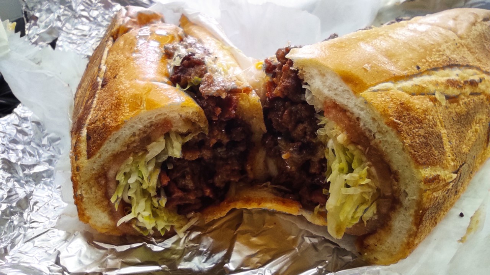

A NYC staple: Chop Cheese

This is New York City's best dish. It can be made easily but also easily
bought at a New York City deli/bodega for an affordable price.
Ingredients
- Bread: Roll or hero
- Oil, any is fine
- Lettuce
- Tomatoes
- Ground beef
- Cheese slices, perferably American
- Seasoning, such as salt, pepper, and/or paprika
- Optional: Any sauce such as ketchup, mayonnaise, and/or BBQ sauce
Steps
- First, you would start the oven and place the pan on it. Put some oil that would be enough to cook the beef.
- Place the beef on the pan and start moving it around with a spatula or your choice of cooking utencil to cook it.
- Once it starts cooking and turns brown, start chopping the beef and add seasoning. The color should be dark brown because of the seasoning. It usually takes 15 minutes to fully cook.
- Then, add the cheese slices in the last minutes of the beef cooking depending on how much beef there is. It should melt on top of the beef as it should cook quick.
- Once the beef is finished cooking, start slicing lettuce and tomato to add into your chop cheese.
- Optional: If you want to toast your roll or hero, then you can toast the bread with a bit of oil.
- Finally, assemble the chop cheese, adding sauces as well. Then, you can start eating it but don't forget your bev.
Back to home page